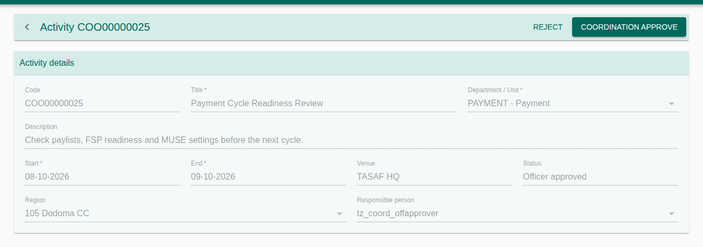
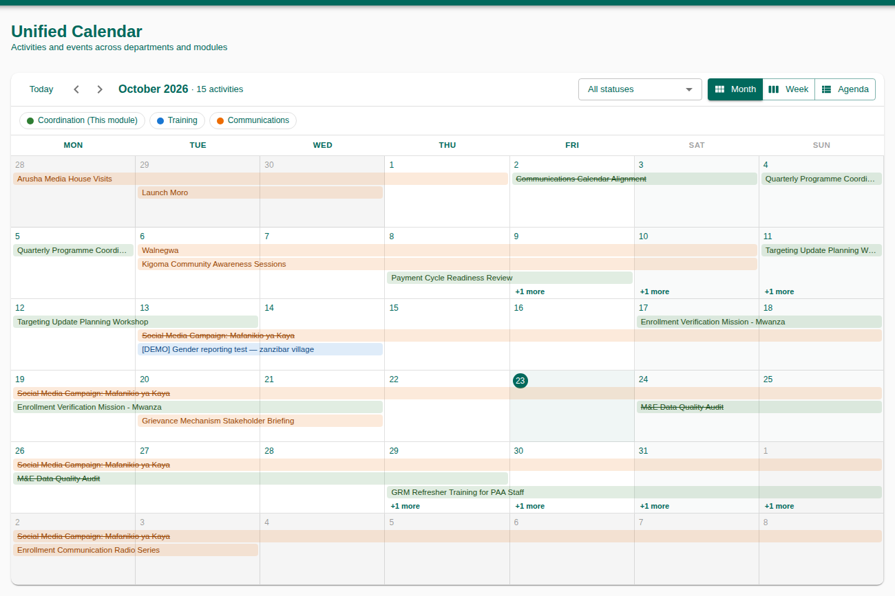
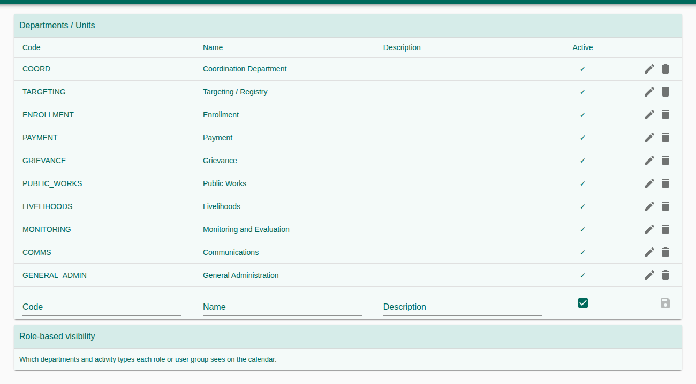

Procedures for planning department activities, taking them through approval, and seeing every department's and module's activities on one calendar. Coordination is where TASAF departments and units put their meetings, missions and events, so clashes are seen before they happen.
1. Purpose, Roles, and Access
| Role | Typical work |
|---|---|
| Department staff | Create and submit activities. |
| Department manager | First approval (or rejection). |
| Coordination officer | Second approval. |
| Coordination manager | Final approval. |
| Coordination administrator | Departments and calendar visibility. |
Access & permissions
| Right | Grants |
|---|---|
251101–251104 | Search / create / update (incl. submit, revise, cancel) / delete activities. |
251110 | Manager approval, and rejection at any stage. |
251111 | Coordination officer approval. |
251112 | Final (coordination) approval. |
251201 / 251202 | See / manage departments. |
251601 / 251602 | Dashboard / Unified Calendar. |
251901 | Coordination Settings. |
2. Menus and Pages
| Menu | Used for |
|---|---|
| Coordination Calendar | Department activities and events. |
| Unified Calendar | Activities across departments and modules (Coordination, Training, Communications). |
| Activities | Search, open or create an activity. |
| Settings | Departments and role-based visibility. |
3. Create an Activity
- Open Activities and press New activity (or the same button on the calendar).
- Fill the title, description, department or unit, responsible person, start and end, venue and location. The code is given automatically (COO…).
- Press Save. The activity is a Draft.
- Press Submit to send it for approval.
On the Activities list, filter by code, title, department, status, responsible person, location and start date. A single click opens a quick preview.


4. Approval Chain
| Status | Button | Who | Becomes |
|---|---|---|---|
| Draft | Submit | Staff | Submitted |
| Submitted | Manager approve | Department manager (251110) | Manager approved |
| Manager approved | Coordination Officer approve | Coordination officer (251111) | Officer approved |
| Officer approved | Coordination approve | Coordination manager (251112) | Approved |
| Submitted · Manager approved · Officer approved | Reject (with a reason) | Holder of 251110 | Rejected |
| Rejected | Revise, or Submit again | Staff | Draft / Submitted |
| Any open status, or Approved | Cancel | Staff | Cancelled |
Approved, Rejected and Cancelled activities no longer count as open items. The reason for a rejection is shown on the activity.
5. Coordination and Unified Calendars
Both calendars have Month, Week and Agenda views, a status filter, and Today / previous / next. The Unified Calendar colours each activity by source (Coordination, Training, Communications); click one to open it in its own module. What each person sees is set under Settings → Role-based visibility.


6. Settings
- Departments / Units: add, edit or deactivate the departments activities belong to.
- Role-based visibility: which departments and activity types each role or user group sees on the calendar.


7. Troubleshooting
| Problem | What to do |
|---|---|
| An approval button is missing | Your role lacks that level's right, or the activity is at another stage. |
| I don't see another department's activities | Check Role-based visibility in Settings. |
| The Unified Calendar menu is missing | It needs right 251602. |